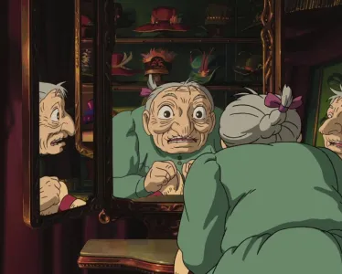
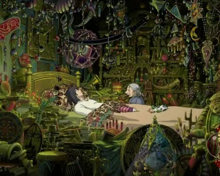

"Avec l'âge on apprend à devenir plus malicieux"
Sophie, héroïne de "Le Château Ambulant," nous enseigne que les apparences peuvent être trompeuses. Explorez ce message puissant sur la véritable valeur qui réside au-delà des stéréotypes, au cœur de la bienveillance et de l'authenticité.
Publié aujourd’hui à 08h06, modifié à 08h13
Image tirée du film
Au-delà des apparences dans "le château ambulant"
La réplique "Avec l'âge, on apprend à devenir plus malicieux" dans le contexte du Château Ambulant revêt un aspect humoristique grâce à l'auto-dérision dont fait preuve Sophie. Même sous l'apparence d'une vieille dame, elle demeure une jeune fille de 18 ans dans son esprit, incarnant ainsi la profonde vérité que les apparences sont souvent trompeuses.
La puissance du message sur les apparences
La question des apparences et de leur caractère trompeur est un thème universellement fascinant. Dans la société moderne, la préoccupation constante pour l'image et la perfection physique est plus présente que jamais. Les réseaux sociaux et les médias nous bombardent d'images de perfection, nous poussant à juger les autres et nous-mêmes par des critères superficiels.
Image tirée du film
La véritable identité au-delà descouches supercifielles
Cependant, le message de Sophie nous rappelle que l'âge, la beauté physique, et même les stéréotypes sociaux, ne sont que des couches superficielles qui ne définissent pas qui nous sommes réellement. La vérité est plus profonde que ce qui peut être vu en surface. En réalité, nos expériences, nos émotions, et notre caractère forgent notre véritable identité. Les gens les plus beaux sont souvent ceux dont l'intérieur rayonne de bonté, d'empathie et de sagesse.
Un exemple d'amour inconditionnel
Un exemple éloquent de cette philosophie est le comportement de Sophie envers Hauru dans le film. Peu importe l'état de Hauru ou son apparence physique changeante, Sophie ne l'a jamais jugée. Au contraire, elle l'a toujours soutenu et accepté, reconnaissant la valeur de la personne au-delà de ses transformations. Cette relation entre les deux personnages renforce le message que la vérité et la valeur d'une personne résident bien au-delà des apparences extérieures.
Image tirée du film
L'importance de voir au-delà des apparences
La nécessité de voir au-delà des apparences est essentielle pour bâtir des relations authentiques et pour apprécier la diversité qui rend notre monde si riche. Cela nous rappelle également de ne pas juger précipitamment les autres, car nous ne pouvons pas connaître leur histoire, leurs luttes, et leur véritable nature en nous basant uniquement sur ce que nous voyons extérieurement.
Une réflexion profonde sur la vérité intérieur
Ainsi, Sophie et son expérience dans le Château Ambulant nous offrent une réflexion profonde sur la superficialité des apparences et la richesse de la vérité intérieure, renforcée par son attitude bienveillante envers Hauru. Dans un monde obsédé par l'image, il est essentiel de se rappeler que la vérité réside bien au-delà de la surface, et que chaque individu est bien plus complexe et précieux qu'il n'y paraît.